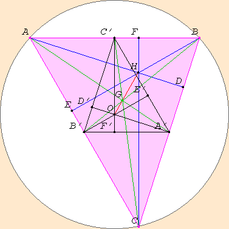

David E. Joyce
Department of Mathematics and Computer Science
Clark University
Worcester, MA 01610


*** If you can read this, you're only seeing an image, not the real java applet! Enable Java on your browser to see the applet. ***
It can be shown that the centroid trisects the medians, that is to say, the distance from a vertex to the centroid G is twice the distance from the centroid to the opposite side of the triangle. So, for instance, AG is twice A'G.
Incidentally, you can drag around other points besides the vertices A, B, and C. If you drag any other point, the figure is designed to swirl around the centroid G. An exception is G itself, and if you move it, the figure will slide along with it. Only moving A, B, or C will actually change the shape of the triangle.
You might have first noticed the circle on which the vertices of the triangle A, B, and C all lie. It is called the circumcircle of the triangle. Any three points, unless they lie on a straight line, determine a unique circle, this circumcircle. The center of this circle is called the circumcenter, and it’s denoted O in the figure. For acute triangles, the circumcenter O lies inside the triangle; for obtuse triangles, it lies outside the triangle; but for right triangles, it coincides with the midpoint of the hypotenuse.
As Euclid proved in Propsition IV.3 of his Elements, the circumcenter can be found as the intersection of the three perpendicular bisectors of the sides of the triangle. These are the lines perpendicular to the sides of the triangle passing through the midpoints of the sides. They’re labelled A'OD', B'OE', and C'OF', and they're colored black, as are the lines connecting the midpoints of the sides, A'B', B'C', and C'A'.
The altitudes of a triangle meet at a point, called the orthocenter, denoted here by H. For an acute triangle, the orthocenter lies inside the triangle; for an obtuse triangle, it lies outside the triangle; and for a right triangle, it coincides with the vertex at the right angle.
For fun, see what points and lines coincide for special triangles: isosceles triangles, right triangles, equilateral triangles, and right isosceles triangles.
It's surprising that these three points lie on a straight line. But you might see why from the picture.
Focus your attention on the centroid G. For each point, like A on one side of it, there is another, like A' on the other side of it but half as far away. On one side is B, the other B'; on one side C, the other C'. In fact, this correspondence sends the whole triangle ABC to the smaller, but similar, triangle A'B'C', called the medial triangle. The sides of the medial triangle A'B'C' are parallel and half the length of the sides of the original triangle ABC.
You can see from the figure that this correspondence sends the altitudes of the original triangle, which are AD, BE, and CF, to the altitudes of the medial triangle, which are A'D', B'E', and C'F'. Since the altitudes of the original triangle meet at the orthocenter H of the original triangle, the altitudes of the medial triangle will meet at its orthocenter H' which you can see in the figure is labelled O. Behold! This orthocenter O of the medial triangle is the circumcenter of the original triangle! Thus, this correspondence sends H to O, that is, H and O are on the opposite sides of the centroid G, and O is half as far away from G as H is.
This figure utilizes the Geometry Applet.
March, 1996.
David E. Joyce
Department of Mathematics and Computer Science
Clark University
Worcester, MA 01610
The address of this file is http://aleph0.clarku.edu/~djoyce/java/Geometry/eulerline.html